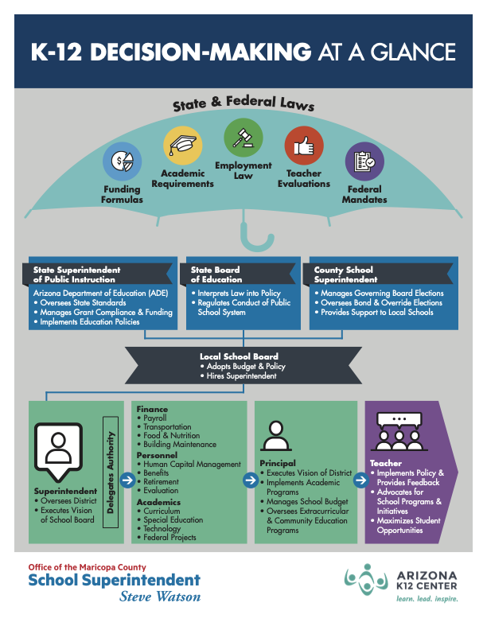

Education Insights
Education Authority & K-12 Decision-Making
The organizations that set education law, distribute funding, govern school districts, and run schools.
Exhibit 02
K-12 Decision-Making at a Glance
This graphic summarizes how laws, governing boards, superintendents, district departments, principals, and teachers connect inside the K-12 system.
Local chain
- Voters elect school district governing board members.
- Governing boards hire and evaluate superintendents.
- Superintendents manage district staff, budgets, curriculum implementation, and operations.
- Principals manage school-level staff, schedules, student services, and campus operations.

Open full-size graphic